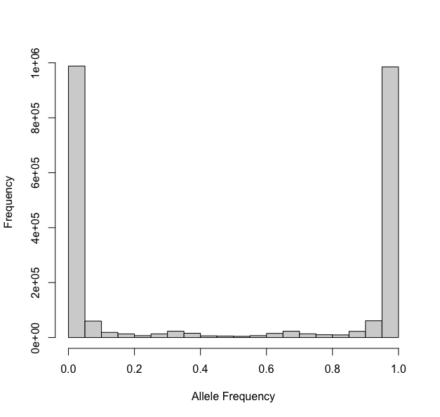
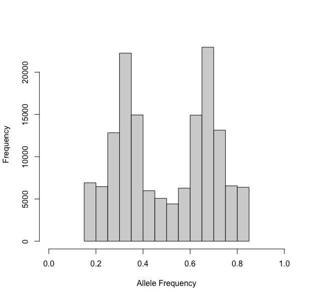
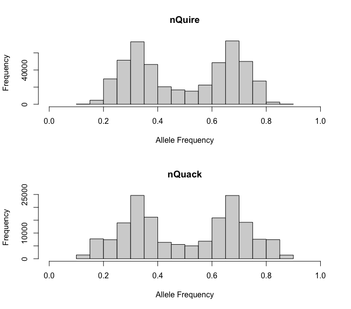
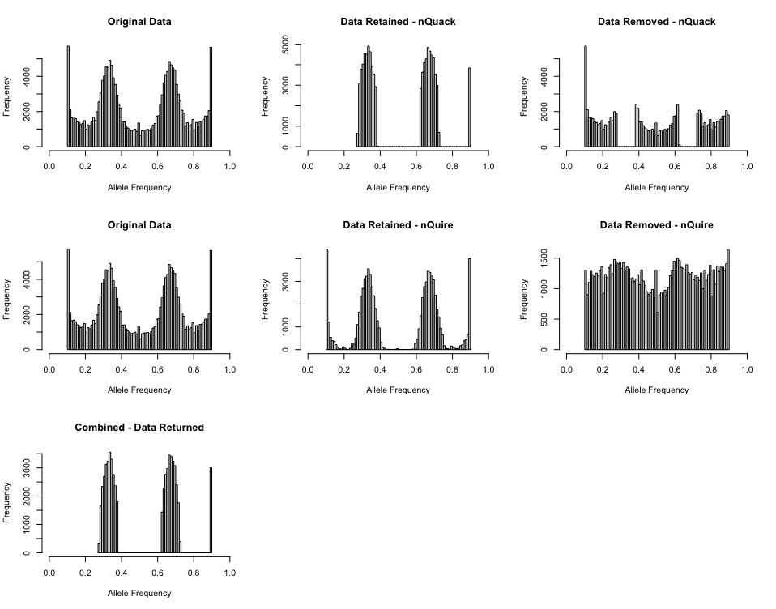
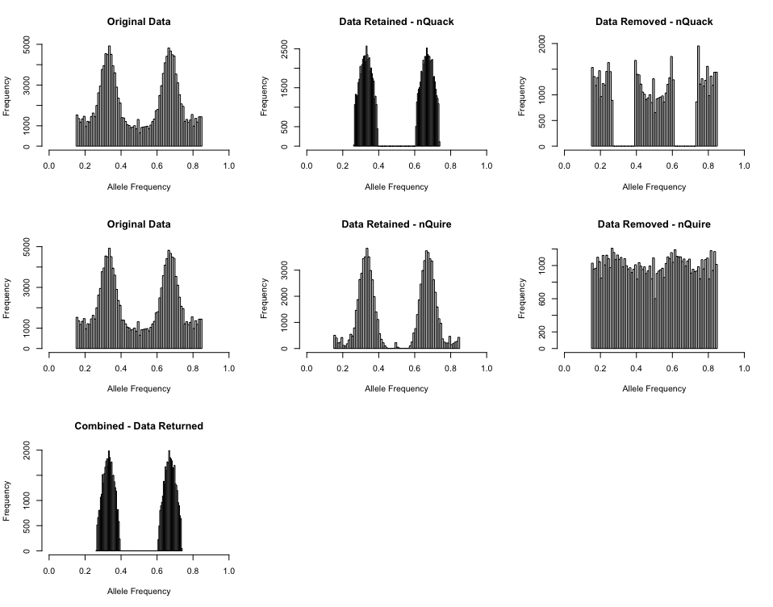
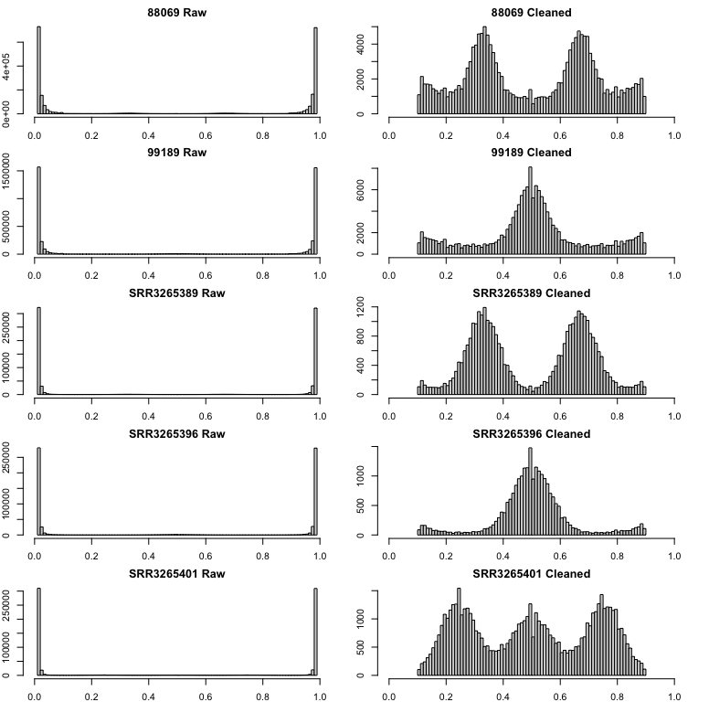
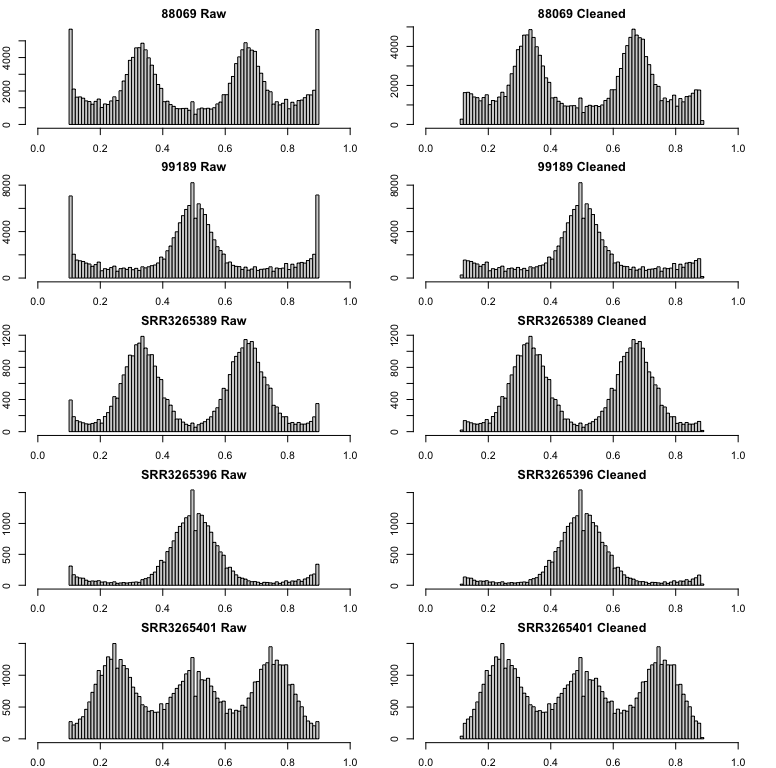

This vignette will teach you how to prepare raw sequence data for input into nQuack. Our software requires sequences to be aligned to a reference genome or target sequences.
Preprocessing
Align to a reference genome
After processing our raw sequence data, we have to align the reads to a reference genome. Here we use bwa-mem2 to align our reads. We then converted our SAM files to BAM files using samtools. This is our bash script:
# Load module
module load bwa-mem2/2.2.1
module load samtools/1.15
# Index the reference
bwa-mem2 index reference_genome.gz
# Mapping
## -t Number of threads, here we run our mapping on 10 threads.
## -M Indexed reference genome.
bwa-mem2 mem -t 10 -M reference_genome.gz sample_001_1.fastq sample_001_2.fastq > sample_001.sam
# SAM to BAM
samtools view -S -b sample_001.sam > sample_001.bam
# SORT
samtools sort sample_001.bam -o sample_001.bamRemove repeats
Identify repeat regions
Prior to running samples through nQuack, we suggest repeat regions be removed. To remove repeats, you first have to identify them. Here we utilize repeat modeler and repeat masker to identify and mask repeats. We also make a database of these mask repeats, which will then be used to remove repeats from our samples alignment.
## Load modules
module load repeatmodeler/2.0
module load repeatmasker/4.1.1
# Set database name
databasename=Species
# Build database based on the reference genome
BuildDatabase -name $databasename ReferenceGenome.fasta
# Repeat Modeler
## -LTRStruct = runs the LTR structural discovery pipeline ( LTR_Harvest and LTR_retreiver )
### and combine results with the RepeatScout/RECON pipeline.
RepeatModeler -pa 36 -database $databasename -LTRStruct > out.log
# Move and gzip the database created
mv RM* 01_RepMod
cd 01_RepMod
tar cvzf RepMod_rounds.tar.gz round-* LTR* tmp*
rm -r round-* LTR* tmp*
gzip families*
cd ..
mv $databasename* 01_RepMod/
cp ReferenceGenome.fasta $databasename.fasta
# Repeat Masker
## -pa # of threads
## -a return alignment
## -xsmall returns with masked lowercased
## -gff creates the gene feature finding formatted output
## -lib indicates the library, alternatively you could indicate the species
## -dir indicates output directory
## .fasta = reference genome
RepeatMasker -pa 24 -a -xsmall -gff -lib 01_RepMod/consensi.fa.classified -dir 02_RepMask $databasename.fasta
# Prepare for use
mkdir 03_database
cut -f1,4,5 02_RepMask/$databasename.fasta.out.gff | perl -pi -e 's/^#.*\n//g' > 03_database/ref2_$databasename.gff.bedFilter low quality
To remove regions of low quality based on the MAPQ score. MAPQ is equal to -10*log-base-10(Pr(mapping position is wrong)), rounded to the nearest integer (see more here). For example, if we wanted to remove any site that had a 50% chance of being mapped to the wrong position, we would set our filter to 4.
The calculation of the MAPQ score depends on the alignment software ( see more here ), therefore it is difficult to pinpoint the score needed to remove reads that map to multiple locations.
Here we take a very stringent approach and remove any sites with that
have a 10% chance or more of being mapped to the wrong location and set
-q flag to 10.
Data processing with nQuack
Step 1: Prepare.
Before running our model, your data must be converted to a
tab-seperated text file. To do this, we wrote a custom function
prepare_data() which will convert your BAM file to a
tab-seperated text file with samtools. For this function, you must
supply the filename (without the .bam ending), the path to the directory
containing your BAM files, and the path to the directory where you want
your processed files to be saved.
## Prepare many samples
inpath <- "filtered/"
outpath <- "Processed/"
filelist <- list.files(path = inpath, pattern = "*.bam" )
filelist <- gsub(".bam", "", filelist)
for( i in 1:length(filelist)){
prepare_data(filelist[i], inpath, outpath)
}Warning: samtools must be local!
If you are working on your personal computer, just make sure samtools is installed and callable as “samtools”. If you are working on a cluster, you may need to install samtools locally. Though the location of install may differ, here is how I installed samtools locally on UF’s amazing HiPerGator slurm cluster:
Step 2: Process
Once your bam is converted into a tab-seperated text file, you must process it and read it into the R environment. With this function, we provide three options for filtering your data:
(1) Total coverage filter
(2) Allele coverage filter
(3) Allele frequency filterTotal coverage can be filtered based on a minimum sequencing depth and maximum sequencing depth quantile probability (coverage that falls above the max.depth.quantile.prob will be removed). Allele coverage can be filtered based on a sequencing error rate, where the coverage of each allele must be more than the total coverage times the error rate: , but less than the total coverage times one minus the error rate: . Finally, sites may be filtered based on the calculated allele frequency, removing all sites below the lower bound, , and above an a upper bound , . Allele frequency can be filtered based on a minimum and maximum allele frequency.
Finally, to avoid data duplication, we randomly sample an allele with equal probability at each site. The resulting data set includes the total coverage per site and the coverage associated with a randomly sampled allele.
## Prepare many samples
textfiles <- list.files(path = "Processed/", pattern = "*.txt", full.name = FALSE)
for(i in 1:length(textfiles)){
temp <- process_data(paste0("Processed/", textfiles[i]), # File with full location
min.depth = 2, # Total coverage gilter
max.depth.quantile.prob = 0.9, # Total coverage filter
error = 0.01, # Allele Coverage Filter
trunc = c(0,0)) # Allele Frequency Filter
assign((gsub(".txt", "", textfiles[i])), temp)
}When should you filter your data?
Coverage filters.
Increasing or decreasing the minimum and maximum coverage filter
parameters might be necessary for your data set. Total coverage can be
inspected based on the output from process_data(), here we
call this output xm. If the x-axis on your coverage
histogram goes way above the targeted sequencing depth, you need to
decrease the maximum depth quantile probability.
# Plot
hist(xm[,1])
## Error cutoffs
### If I increase the sequence error rate, how many sites will likely be removed?
new.e <- 0.02 # 2 sites out of every 100
removes <- c()
for(i in 1:nrow(xm)){
if(xm[i,2] < (xm[i,1]*new.e) | xm[i,2] > (xm[i,1]*(1-new.e))){
removes[i] <- 1
}else{
removes[i] <- 0
}
}
sum(removes)Allele Frequency
Previous methods automatically truncated data by allele frequency, removing any site with a frequencies below 0.1 or above 0.9. On first pass, we suggest you do not truncate your data. However, once your data is processed, you should plot your data to inspect.
# Convert to allele frequency
xi <- xm[,2]/xm[,1]
# Plot
hist(xi)For Phytophthora infestans (ENA:ERR1990235, Triploid), here is the processed data with no truncation:

Notice the U-shaped ends? Well these should be removed prior to
ploidal estimation. We simply set trunc = c(0.15,0.85)
above and then reinspected our data:

One last note - if you expect you have 6x samples, be very careful with your truncation, as the mean of one of the mixtures should be 0.16 for a hexaploid.
Comparing nQuack to nQuire
When you prepare data with nQuack, we use samtools mpileup, where similarly to nQuire, we removes reads that did not align and PCR duplicates (samtool flags: BAM_FUNMAP and BAM_FDUP). By default, nQuire removes sites with coverage less than 10, as well as sites where frequency is less than 0.2 or above 0.8. We allow users to modify these parameters after the text file is creater rather than default to arbitrary cutoffs. Here we mimic nQuire’s defaults for the triploid mentioned above (Phytophthora infestans, ENA:ERR1990235). With nQuack, you can replicate the nQuire data frame if desired.

If you happen to like nQuire’s data preparation more than ours, uses
their data in our program. After processing samples with nQuire’s
create and view functions, the resulting txt
file can be read into R. To prepare the data frame for nQuack, reduce
the three column data frame to two columns by randomly sampling allele A
or B for every site. We created a function to help with this.
# Read in nQuire txt file
df <- process_nquire("file.txt")What about ‘denoising’?
Noise can get in the way of model selection, but identifying what data is real and what is noise is difficult. Here we filter allele frequencies with a normal + uniform mixture model. nQuack uses the scaled probability of each data point belonging to each mixture model, which is inferred in the expected maximization algorithm. We remove allele frequencies where the probability of belonging to uniform mixture is higher than their probability of belonging to any other mixture. We also implement nQuire’s denoise method here, which utilizes the inferred alpha parameter and a histogram of base frequencies to filter the data.
This method is not without faults. Notably, this method does a poor
job of truncating the allele frequencies and this needs to be done prior
to attempting this method. For example, for the triploid mentioned above
(Phytophthora infestans, ENA:ERR1990235), if you only truncated
by c(0.1, 0.9) a peak toward the right is still
retained.

However, when you truncate the inital data set by
c(0.15, 0.85), a much cleaner data set is returned by the
denoise_data() function:

Alternative approach - Bclean
When the shape and scale parameters associated with the beta distribution are both less than 1, the distribution is U-shaped. We can leverage this U-shaped distribution to remove noise. Here we utilize the beta distribution with three mixtures representing cytotypes included in nQuack and two mixtures representing a U-shaped distribution. We constrained the first three mixtures to have shape and scale parameters above 1, while the last two mixtures shape and scale are constrained to be less than 1. With this implementation of expected maximization, we utilizes the scaled probability of each data point belonging to each mixture model to remove sites where the probability of belonging to a U-shaped mixture is higher than the probability of belonging to any other mixture. Due to the computational time needed to run the expected maximization algorithm, by default, we simple calculate this probability matrix with the E-step and do not run the complete algorithm.
This is a great alternative to allele truncation. Here is an example
of the Bclean() function applied to all nQuire’s samples
including Phytophthora infestans diploid (99189) and triploid
(88069), and Saccharomyces cerevisiae diploid (SRR3265396),
triploid (SRR3265389), and tetraploid (SRR3265401):

This method can also be applied after truncation to catch any extra
peak:
